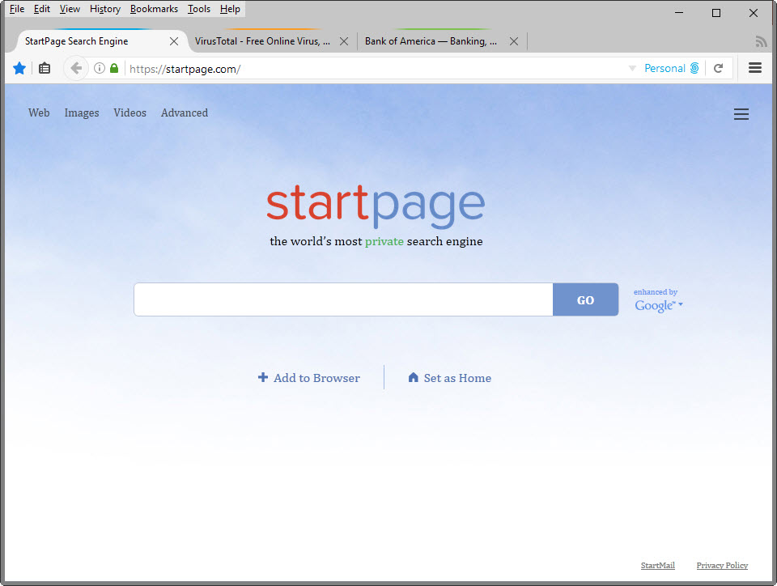
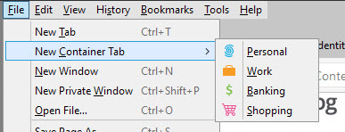
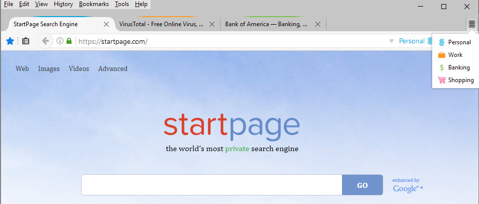

Container Tab is a new experimental feature that is available in Firefox 50 Nightly currently that can be best described as profiles lite. We talked about the feature back when it was called Contextual Identities.
Firefox supports profiles which you can use to run different copies of the browser that are completely independent from each other.
Each profile has its own profile folder with storage, temporary files, extensions, cookies, preferences, and anything else that is either user created or automatically added.
Container Tab uses a similar concept. As Mozilla puts it, they allow users to "separate different contexts while browsing the web on Firefox".
One core difference to profiles is that containers are opened under the same profile. So, instead of having to configure Firefox to launch different profiles for various activities using shortcuts, a Firefox user would simply launch one of the available containers instead for that.
It is rather interesting that Mozilla choose to use containers this way considering that one reason for blocking the integration of private tabs in Firefox was that having different contexts in the same browser window would confuse users.
Note: Container Tab is an experimental feature that may or may not land in Firefox Stable. Additionally, it may change before it is released.
Container Tab

Containers are enabled by default on Firefox 50 Nightly. You can open a new container with a tap on the Alt-key, and the selection of File > New Container Tab from the context menu.

There is also a new icon that you may drag and drop on one of Firefox's toolbars to access the functionality using it instead.

The four containers personal, work, banking and shopping are available currently. Each acts separately from the others and the default container.
Containers are easily distinguishable by their color in the Firefox tab bar. Mozilla displays the container type on the rightmost side of the address bar on top of that.
Container names are suggestions, but they don't limit what you can do when using them. You can use the banking container to check a second Gmail account, or Shopping for watching YouTube videos without being signed in.
Tab Containers versus profiles
You are probably wondering who containers differ from profiles. I already mentioned that containers all work under a single profile.
Containers use individual browser storage that is completely separated from the default container and any other container that is open at the same time.
Browser storage refers to data such as cookies or localStorage that is saved to the local system by the browser.
The following data is separated by containers:
- Cookies
- localStorage
- indexedDB
- HTTP data cache
- Image Cache
- Any other areas supported by originAttributes
Sites that you open in a container have access to that container's browser storage, but no access to any other browser storage.
Containers share data, which is different from profiles where this does not happen. All containers get access to saved passwords, the browsing history, bookmarks, saved form data or security exception.
Use cases
Containers improve privacy for users when used correctly. You could separate social media sites from your regular browsing session for instance, or avoid ad retargeting by opening shopping sites in their own container.
Another handy effect of using containers is that you can open different accounts on the same site at the same time. Open three Gmail accounts in the same Firefox window, or a work and personal Google account.
The future
Mozilla plans to add custom container options to the feature in the future, and considers site-specific containers as well.
Especially the latter seems useful as they could help users in several ways:
- Restrict a container to a specific site or set of sites.
- Protecting against phishing if Mozilla implements options to open a site always in a specific container.
- Protection against clickjacking, CSRF, or other attacks that "rely on the presence of ambient credentials".
- Isolate data, and limit tracking.
Questions
The following questions remain unanswered for now:
- Will it be possible to clear the data of individual containers / reset them?
- Will there be a whitelist feature for containers to allow only specific sites?
Closing Words
Container Tabs can be a useful feature, especially for users who sign in to different accounts on the same site using different Firefox profiles or browser extensions.
The introduction of site-specific containers should improve privacy and security significantly as well.
One question that cannot be answered right now is how regular Firefox users would perceive the feature. It seems complicated to use but I guess that Mozilla could provide automation to some of that in the long run.
I'd probably use it only for signing in to different accounts on the same site at once. But what about you?
You can follow the progress Mozilla makes on Bugzilla.

First impression: First exciting/interesting thing about Firefox in years.
I agree.
Yes, I also have to agree. This is indeed a great idea.
You didn’t like Tracking Protection? I have it permanently on since last year 😋
How do I get my Firefox tab bar to be gray like in your screenshot without changing the default color in Windows 8.1? Like currently mine is sky blue on Windows, so it uses that for my title bar and tab bar as well, which means my whole tab bar is blue, and the inactive tabs don't stand out as much. I would prefer it to be gray maybe, if I could do that without changing my color in Windows. Is there a way to do that, or is that just a Windows 10 thing? Let me know. Thanks!
Its a windows 10 thing. Firefox has another theme which is disabled on release and beta versions. If you want to try use this extension to enable it. https://addons.mozilla.org/en-US/firefox/addon/devedition-theme-enabler/?src=ss
thank you very much for information.nice feature
i don't tested yet.but i think it don't launch another firefox.exe right? since profile do this,if this new feature don't do the this
it is very good.save the memory
also hope this have ability to disable extension per Container.since i have different profile with different extension set
but still i stay in Firefox 45.Firefox 46 and 47 use to much CPU
These containers certainly sound preferable to creating/maintaining multiple profiles. Re-installing extensions and tweaking the configs for redundant copies of myriad extensions is, for me, just too overwhelming.
If we're able to clone firefox profiles, I don't know how to do so. Maybe we're able to use the sync feature to "restore" everything into each freshly-created new profile? (idunno, I don't use sync)
consider:
AdBlock extension, with multiple (6 or so) subscription lists enabled, I've seen the extension's data folder reach 38Mb or so. IIRC, contributing to the huge size is the fact that, by default, the extension is configured to save 4 backup copies of its ruleset(s). SO, IF YOU SETUP AND USE 3 FF PROFILES, the data from just this single browser extension consumes ~120Mb storage space.
I'm curious to hear whether the mechanism in this proposed native functionality is identical to that used in the existing browser extension named "Priv8". In the moz wiki page I noted that a container context considers: container_ID + origin + scheme + host + port, which sounds identical to mechanism employed in the extension. Does this moz announcement regarding "new slick experimental feature" just stand as an example of NIH (not invented here) syndrome?
As a dedicated user, long-time user / critic of Firefox, I think this is a nice feature for power users like me that most of the masses won't ever use (atm). Therein lies the problem.
What FF needs most to become popular again is NOT "the next killer gimmick" - what FF needs is an on-going campaign that advertises how robust their add-on ecosystem is.
All users start off as a basic user that use whatever is placed in front of them. - like a child (Microsoft Edge).
When they grow up a little they will want the fast new hotness like a teenager (Chrome).
By the time they become power users they will want what gives them the most customization/control over their browsing experience like an adult (Firefox).
Metaphorically:
You're a child for 10 years.
You're a teen for 10 years.
You're an adult for 60+ years.
The problem right now is the masses get stuck somewhere between child and teen.
FF should advertise and educate users into becoming adults. If you capture the adults - you win.
Example - make 15 second gifys or YouTube clips that ask/demonstrate:
1) Do you watch a lot of YouTube? Use FF with YouTube Center and see how much cleaner YouTube is.
2) Read a lot of Reddit? Use FF with Reddit Enhancement Suite and see how much easier it is to read.
3) Watch a lot of porn? Use ABC123XYZ addon and download all the things.
Every child now is a potential power user in 10 years thanks to the proliferation of the internet in our daily lives. FF needs to think long term. Instead of coming up with gimmicks every year and failing to play catch-up, they should be educating how much better the average user's experience would be if they "grew up" and switched to FF.
Having said all that... my first impression of Container Tab is that it is moderately useful feature as long as it doesn't introduce a lot of bloat on the backend that devs will use as an excuse to gut something more useful in the future.
P.S. - sorry for the rant.... this topic always gets my goat.
porn, getting goats ... you had me at porn, but nice touch - how did you know .. where can i get this ABC123XYZ addon?
seems good. but I hope there will be context menu to open tabs based on container
open link in new tab->personal
->shopping
->banking
and I hope I can retain specific cookies across the containers. like gmail for example.
otherwise it's not really useful to me
Cookies are separate, and you won't be able to retain them across containers. The link feature is already there, right-click and you get an option to open the link in container x.
Ok, granted, that one is nice. But if Mozilla hopes to get advanced users back who picked Firefox because they loved customization and UI features like advanced theme options (what they will kill) or options to change the browser toolbar layout/elements layout, adding a handful security features are not enough. I and many other users will talk about coming back when we can have again a similar built inside customization feature set like in the 20's Firefox version series.
Until then, with Vivaldi or Otter-Browser i stay.
Agreed! 100%
It's a very powerful feature!!!
This sound like feature rather for power users than ordinary one who needs to just check few sites
It depends. If Mozilla manages to get automation right, they hint at some scenarios on the wiki, then it could prove useful to many users even those who don't know what a container is or what it does.
@gh
"If we're able to clone firefox profiles, I don't know how to do so."
Pretty sure you can just copy/paste your profile folder, then use FF's Profile Manager to load the new profile.
FF will adjust all (or most?) absolute paths to the new folder. (f.e. paths in extensions.xpiState, in extensions.json, etc)
I've never "cloned" a profile this way, but I have changed the location where I stored my profile(s) and everything continued to work perfectly.
Thanks. I should have mentioned that the nearest-to-working solution I ever found
was the FEBE / CLEO / OPIE tools. Any time I tried, it never "just worked" though.
I was always left with the chore of tracking down and search-replacing
one or several pathstring-related hiccups.
https://addons.mozilla.org/en-US/firefox/addon/febe/
http://www.customsoftwareconsult.com/forum/viewforum.php?f=5
Very nice!
I was already very interested when you mentioned it in an article some months back; I'm glad to know the idea wasn't abandoned.
Implementation-wise, I hope there'll be tweaks possible, like:
- choosing whether or not a child tab opens in the same container or a default container
- renaming containers and adding new ones
- colouring tabs
...
I currently use two profiles, a work and a non-work one (I used to use priv8 which is kinda like containers, but it was a performance hog in some situations); maybe I can merge them again!
Also, my privacy is fairly well protected thanks to Self-Destructing Cookies and uMatrix, but another layer never hurts.
Mozilla did something well, I'm surprised.
Sounds like an interesting idea and has it's use cases. Personally I won't use it, because I don't have social media I need to separate but maybe some "normal" users will use it (but I doubt that the vast majority will use it).
I am really loving this. It's nice to keep things all in the one profile. And the URL bar clearly shows which one you are in without taking up any free space. Just a bit in the URL bar.
It's nice to see that my addons work on every container(tested). But it may cause problem in few of them, which are cookie specific. I like know how does FF handle it?
PS:
I found ublock origin,download them all, webmail ad blocker, nimbus was working fine.
Thanks, this is great and very useful feature, especially for working people!!! I have one google account at home, second at work, and same problem with other services, and want to work with both accounts in one profile and browser window.
At now I use Multifox Firefox extension for solve this problem, but seems this extension will stop working on new versions of Firefox https://github.com/hultmann/multifox/issues/215 (when multi-process will be enabled for all people)
So, I hope that Firefox release this feature before Multifox extension die.
Decent feature, but I use an extension (either CookieKeeper or Auto Restore Cookies on Startup) so I can always have certain cookies enabled for certain websites.
However, with Container Tabs, this only works for the default container. (The same problem occurs in private windows or tabs.) I'm looking for an extension that allows me to persist certain cookies across all containers.
I haven't tried Cookies Manager+ yet, but I'm guessing that will not work either.
Seems very promising !!